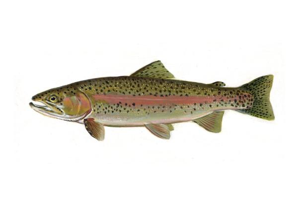
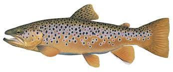
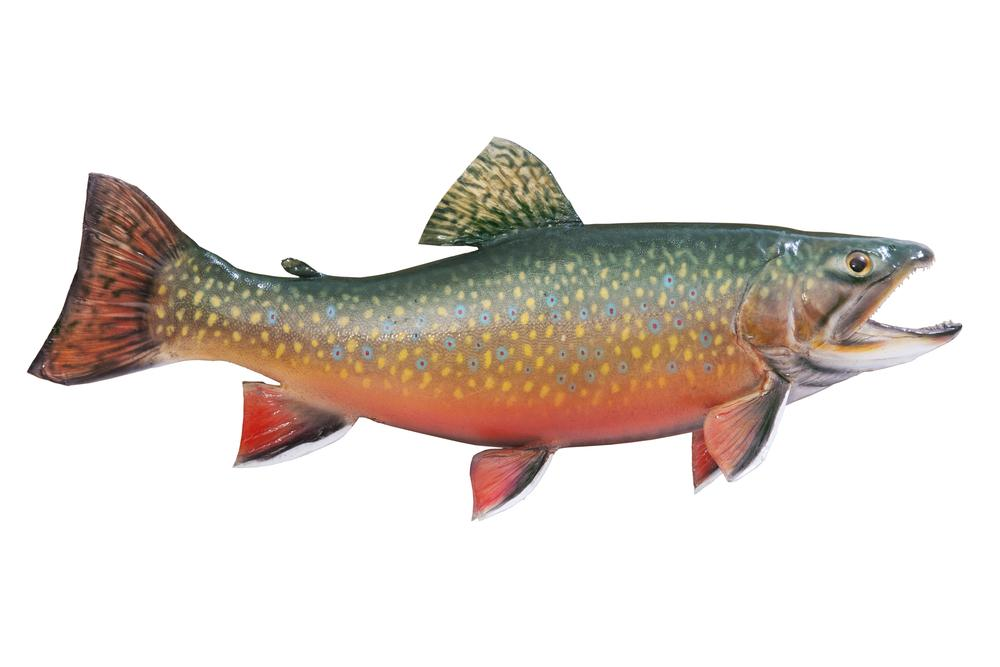
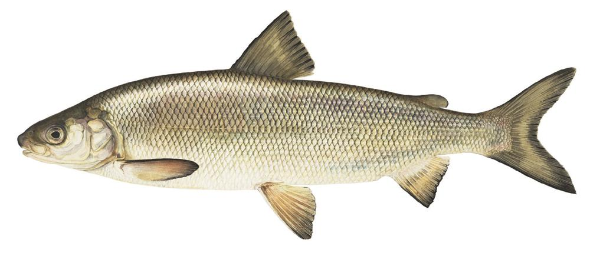
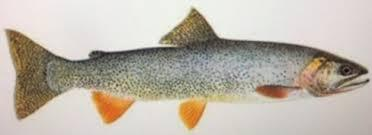
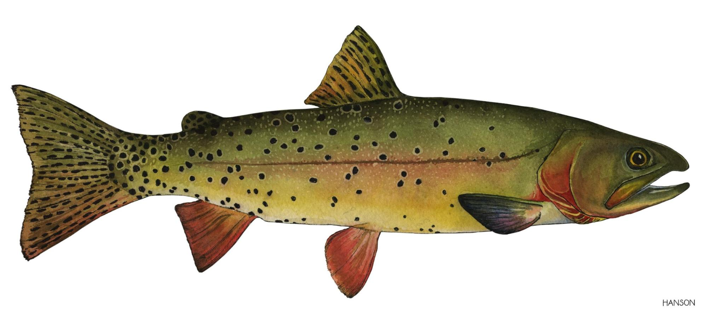

Learn about the trout and other species you'll encounter while fly fishing in eastern Idaho waters.

Rainbow Trout
Oncorhynchus mykiss
Rainbow trout are one of the most popular game fish in Idaho. Known for their aggressive strikes and beautiful coloring, they thrive in the cold, clear waters of the Snake River and its tributaries. They typically range from 12-18 inches, though larger specimens are common in our premier waters.
Best Season: Spring & Fall

Brown Trout
Salmo trutta
Brown trout are more selective feeders than rainbows, making them a rewarding challenge. They inhabit deeper pools and undercut banks. Browns in eastern Idaho can grow quite large, especially in the Henry's Fork, where they've earned a reputation for being elusive but magnificent.
Best Season: Summer & Fall

Brook Trout
Salvelinus fontinalis
Brook trout are beautiful fish with distinctive markings. They prefer cooler water temperatures and are abundant in the higher elevation streams and alpine lakes surrounding the Rexburg area. Though generally smaller than browns and rainbows, they're spirited fighters and excellent for beginners.
Best Season: Summer

Mountain Whitefish
Prosopium williamsoni
Often dismissed by anglers, mountain whitefish are surprisingly fun to catch on light tackle. These small, sleek fish school together and are plentiful in Idaho's rivers. They'll readily take small flies and provide good practice for honing your technique year-round.
Best Season: Winter

Snake River Cutthroat
Oncorhynchus clarkii behnkei
The Snake River Cutthroat is a native species unique to the Snake River drainage and found primarily in the upper tributaries. These beautiful fish are characterized by distinctive red slashes under their jaw. They're more delicate than introduced species and offer a unique opportunity to fish for native fish in their natural habitat.
Best Season: Summer & Fall

Yellowstone Cutthroat
Oncorhynchus clarkii bouvieri
Yellowstone Cutthroat are a classic high-alpine species found in the pristine lakes and streams near Yellowstone. Known for their willingness to take dry flies and their vibrant coloring, they represent a connection to some of the wildest waters in the region. These fish thrive in the cold, clean waters above 8,000 feet elevation.
Best Season: Summer